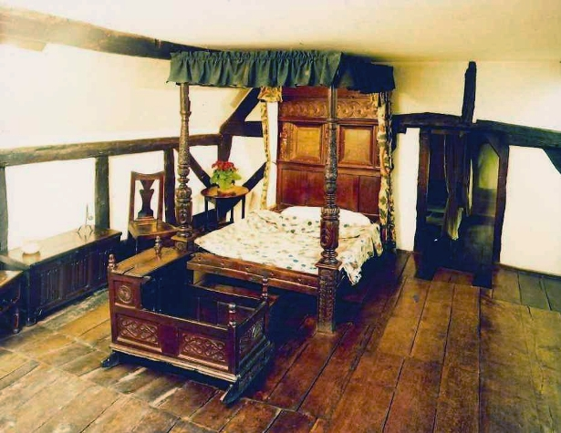

His second-best bed

Since Shakespeare did spend most of his life in London away from his wife Anne, its easy to think this may have been a slight. But the best bed was regarded as "an heirloom piece," to be passed to an heir rather than a spouse. It is also likely that the best bed would have been reserved for guests, meaning the “second-best” was the bed that William and Anne shared. Shakespeare died at home with his family in Stratford-upon-Avon when he was 52 years old.